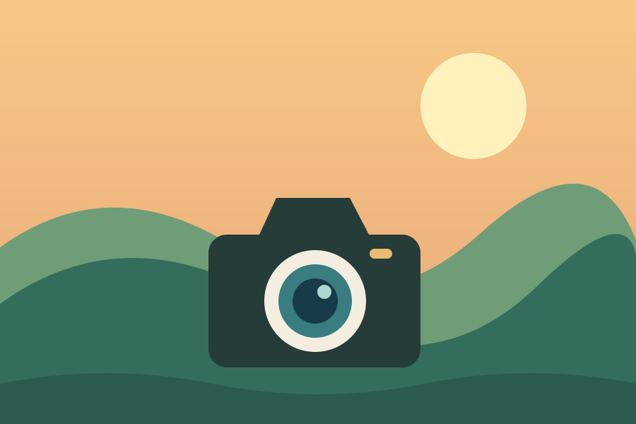

Чому я фотографую
Я захопився фотографією, бо люблю зберігати моменти, які інакше легко забути. Найчастіше знімаю природу та міські вулиці під час прогулянок.
Це хобі вчить мене бути уважнішим. Навіть знайоме місце виглядає по-новому, якщо змінити ракурс або дочекатися м’якого вечірнього світла.

Що потрібно для зйомки
Почати можна навіть зі смартфона. Для прогулянки я беру лише кілька речей:
- камеру або смартфон;
- запасний акумулятор;
- цікавість до деталей навколо.
Де я вчуся
Я переглядаю роботи інших фотографів і читаю поради про композицію та світло. Ось корисний ресурс для початківців: National Geographic Photography.